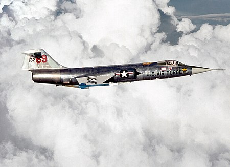

F-104
록히드 F-104 스타파이터(Lockheed F-104 Starfighter)는 미국의 단좌, 고성능, 초음속 요격기로, 1958년부터 1969년까지 미국 공군에서 운용되었다. 센추리 시리즈 중 하나로, 1975년 단계적으로 폐지되기 전까지 미국 주 공군에서 사용되었다. 미항공우주국(NASA)에서는 1994년 은퇴 전까지 초음속 비행 시험과 우주비행 프로그램에 F-104 유형의 혼성팀을 운용하였다. 하지만 잦은 고장과 불안정한 구조로 인해 많은 사망사고가 끊이지 않았다.
미공군 F-104C가 베트남전에서 운용되었고, F-104는 인도-파키스탄 전쟁에서 파키스탄에서 잠시 운용되었다. 중화민국 공군의 F-104는 진먼 포격전 당시 중국 인민해방군 공군과 교전했다.
록히드의 수석 엔지니어인 클래런스 "켈리" 존슨은 1951년 12월 한국을 방문했다. 미국 공군 조종사들과 면담하여 그들이 어떤 성능의 전투기를 원하는지를 물어보았다.
한국에 배치된 미국 공군 조종사들은 F-86 세이버를 몰고 소련 공군의 미그 15와 공중전을 벌였다. 미국 전투기가 더 대형이고 복잡함에도 불구하고, 많은 미국 조종사들은 미그 15의 성능이 더 우세했다고 생각했다. 조종사들은 작고 단순하고 고성능인 전투기를 요구했다. 이러한 면담 결과에 따라, 존슨은 미국에 돌아와서 즉시 새로운 전투기 개발을 시작했다. 1952년 3월 그의 팀이 구성되었으며, 3.6톤 부터 23톤까지 다양한 크기의 전투기 디자인들을 연구했다. 한국전쟁의 미국 조종사들이 작은 기체를 요구함에 따라, 존슨 팀은 그 중 가장 작은 모델을 선택했다.
파생형
- F-104A
- F-104B
- F-104C
- F-104D
- F-104G
- F-104J
- F-104N
- F-104S
운용국
- 캐나다
- 독일
- 일본
- 대만
- 미국
- 파키스탄